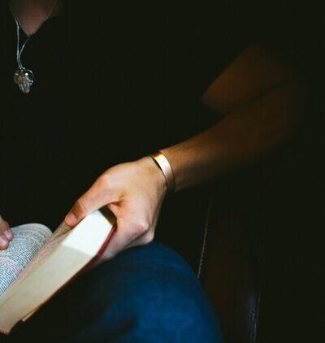

WB Rings & Things
WB Rings and things is a jewelry store that designs jewelry to represent our love of God. Many times we wear jewelry that represents something. We wanted to represent the most important thing. We hope that our jewelry helps you remember what's most important, and who is ALWAYS with you! The question "why will your visitors come to your site instead of another" is a great question! We hope that our site attracts people's eyes, that our jewelry has a deeper meaning than just what looks good, or is trending. Our goal is for people to share the light of our God and do so willingly and passionately. We strive to help others feel the love of Christ! We hope that through these bracelets, necklaces, and rings and hopefully more one day we can
WB Rings and things is a jewelry store that designs jewelry to represent our love of God. Many times we wear jewelry that represents something. We wanted to represent the most important thing. We hope that our jewelry helps you remember what's most important, and who is ALWAYS with you! The question "why will your visitors come to your site instead of another" is a great question! We hope that our site attracts people's eyes, that our jewelry has a deeper meaning than just what looks good, or is trending. Our goal is for people to share the light of our God and do so willingly and passionately. We strive to help others feel the love of Christ! We hope that through these bracelets, necklaces, and rings and hopefully more one day we can